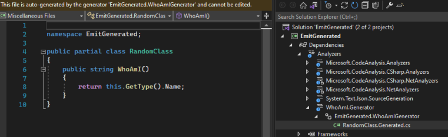
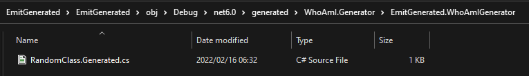
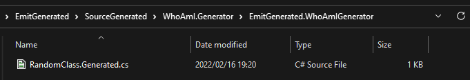

Daily Knowledge Drop
The output location of code created by a Roslyn source generator can be customized, so that the output file can be included in source control (to be included in code reviews for example).
This post will give a brief overview of source generators, and then show the default behavior and how it can be customized.
This post will not go into detail regarding the finer details of source generators - if you would like more details on source generators, see the reference links below.
Source generators
In short, a source generator is a piece of code which writes code. The functionality ships as part of Roslyn, the .NET Compiler Platform SDK.
Source generators allow for the inspection of user code as compile time, and then based on specific criteria, can add additional code to the original code base, on the fly.
Let's look at a very simple example, and all it's moving parts. In the example, based on an attribute being present on a class, an additional method called "WhoAmI" will be added to the class, which will return the class the method is a member of.
This code is very basic and by no means production ready.
Define the qualifier
For a class to qualify for the new WhoAmI method, it will need to be decorated with an attribute - so first the attribute is defined. This is not specific to source generators, just a normal C#attribute.
[AttributeUsage(AttributeTargets.Class)]
public class WhoAmIAttribute : Attribute
{
public WhoAmIAttribute() { }
}
Find qualifying classes
The next step is to setup the rule to find qualifying classes. This is done using an ISyntaxReceiver implementation. Roslyn will parse the entire code base and for each separate syntax node (each part of code) will call the ISyntaxReceiver implementation.
public class WhoAmISyntaxReceiver : ISyntaxReceiver
{
// This is to store the class which qualified
public ClassDeclarationSyntax QualifyingClass { get; private set; }
public void OnVisitSyntaxNode(SyntaxNode syntaxNode)
{
// check the type of node, and if its not a ClassDeclaration,
// ignore as it will automatically not qualify
if (syntaxNode is ClassDeclarationSyntax cds)
{
// check if the class is decorated
// with an attribute called "WhoAmI"
if (cds.AttributeLists.SelectMany(al =>
al.Attributes.Where(a =>
a.Name.ToString().Equals("WhoAmI",
StringComparison.InvariantCultureIgnoreCase)
)).Any())
QualifyingClass = cds;
}
}
}
This implementation, as well as the generator are created in a separate project called WhoAmI.Generator.
Generate the code
Next, is to setup the actual generator. The generator will received input from the ISyntaxReceiver implementation, generate the code as a string, and then output a C# file.
[Generator]
public class WhoAmIGenerator : ISourceGenerator
{
public void Execute(GeneratorExecutionContext context)
{
WhoAmISyntaxReceiver syntaxReceiver =
(WhoAmISyntaxReceiver)context.SyntaxReceiver;
// Get the qualifying class from the receiver
ClassDeclarationSyntax qualifyingClass = syntaxReceiver.QualifyingClass;
if (qualifyingClass is null)
{
return;
}
// Generate the required code as a string
SourceText sourceText = SourceText.From($@"
namespace EmitGenerated;
public partial class {qualifyingClass.Identifier}
{{
public string WhoAmI()
{{
return this.GetType().Name;
}}
}}", Encoding.UTF8);
// Output the C# file with the given name and code
context.AddSource($"{qualifyingClass.Identifier}.Generated.cs", sourceText);
}
public void Initialize(GeneratorInitializationContext context)
{
// register the generator to receive notification from WhoAmISyntaxReceiver
context.RegisterForSyntaxNotifications(() => new WhoAmISyntaxReceiver());
}
}
This implementation, as well as the receiver mentioned above, are created in a separate project called WhoAmI.Generator.
Project Reference
Now we have to register the generator in the main project. The WhoAmI.Generator project (which contains the generator and the receiver) can be referenced as a normal Project Reference initially. However, the csproj then needs to be edited to indicate that the referenced project is a generator and not a normal project reference.
The OutputItemType and ReferenceOutputAssembly values are added. The relevant section in the csproj file will look as follows:
<ItemGroup>
<ProjectReference Include="..\WhoAmI.Generator\WhoAmI.Generator.csproj"
OutputItemType="Analyzer" ReferenceOutputAssembly="false" />
</ItemGroup>
Implement and output
Finally, it's time to use the generator.
A partial class is created, and decorated with the attribute:
[WhoAmI]
public partial class RandomClass { }
Even though the class doesn't directly contain a method called WhoAmI, the generator will create the method in a separate file (which is allowed as the class is partial):
var rc = new RandomClass();
Console.WriteLine(rc.WhoAmI());
The output:
RandomClass
We are now able to call the WhoAmI method to find out the type.
Limitations
The advantage of generators is that the code is automatically generated at compile time, however the side-effect of this is that the code is not emitted to a file on disk. The only way to see the code generated it to browse to the file under Dependencies => Analyzers.

Up until now this process has worked and might suite your needs just fine. But if you need the generated file(s) to be code reviewed and committed to source control, the current setup will not allow that.
Next we'll look at how the process can be configured to emit the file.
Customization
Emit the file
First, lets configure that the file should be emitted. This is done by adding an EmitCompilerGeneratedFiles node to the csproj file of the application.
<PropertyGroup>
<EmitCompilerGeneratedFiles>true</EmitCompilerGeneratedFiles>
</PropertyGroup>
The file is now generated in the following location:
{BaseIntermediateOutpath}/generated/{Assembly}/{SourceGeneratorName}/{GeneratedFile}
Typically this could be the obj folder:

Change the location
The CompilerGeneratedFilesOutputPath node can be added to control where file should be emitted to:
<PropertyGroup>
<EmitCompilerGeneratedFiles>true</EmitCompilerGeneratedFiles>
<CompilerGeneratedFilesOutputPath>SourceGenerated</CompilerGeneratedFilesOutputPath>
</PropertyGroup>
The file is now generated in the following location:
{CompilerGeneratedFilesOutputPath}/{Assembly}/{SourceGeneratorName}/{GeneratedFile}

Fix errors
As it stands now, the application won't compile due to the following error:
Type 'RandomClass' already defines a member called 'WhoAmI' with the same parameter types
We have configured the file to be emitted to the custom location, however the file is still also being emitted into memory and compiled as part of the source.
Knowing this, the above error now makes sense - we have two files used in compilation, generating the same method.
The final step is to exclude the files emitted to disk from being used in the compilation. An ItemGroup is added to the csproj file, which instructions any cs files emitted to disk by the source generator to be excluded from compilation.
<PropertyGroup>
<EmitCompilerGeneratedFiles>true</EmitCompilerGeneratedFiles>
<CompilerGeneratedFilesOutputPath>SourceGenerated</CompilerGeneratedFilesOutputPath>
</PropertyGroup>
<ItemGroup>
<Compile Remove="$(CompilerGeneratedFilesOutputPath)/**/*.cs" />
</ItemGroup>
The files will still be emitted to disk, and so can be included in source control and code reviews, but are now marked to be excluded in the compilation process.
Notes
Source generators are a powerful tool to be leveraged to solve certain use cases - however the tooling to support them is not always as powerful. The ability to emit the files to disk can be used to assist with the development inner look to ensure the output code is correct, as well as included as part of source control to be properly reviewed.
References
Source Generators
Saving source generator output in source control
Daily Drop 16: 22-02-2022
At the start of 2022 I set myself the goal of learning one new coding related piece of knowledge a day.
It could be anything - some.NET / C# functionality I wasn't aware of, a design practice, a cool new coding technique, or just something I find interesting. It could be something I knew at one point but had forgotten, or something completely new, which I may or may never actually use.
The Daily Drop is a record of these pieces of knowledge - writing about and summarizing them helps re-enforce the information for myself, as well as potentially helps others learn something new as well.